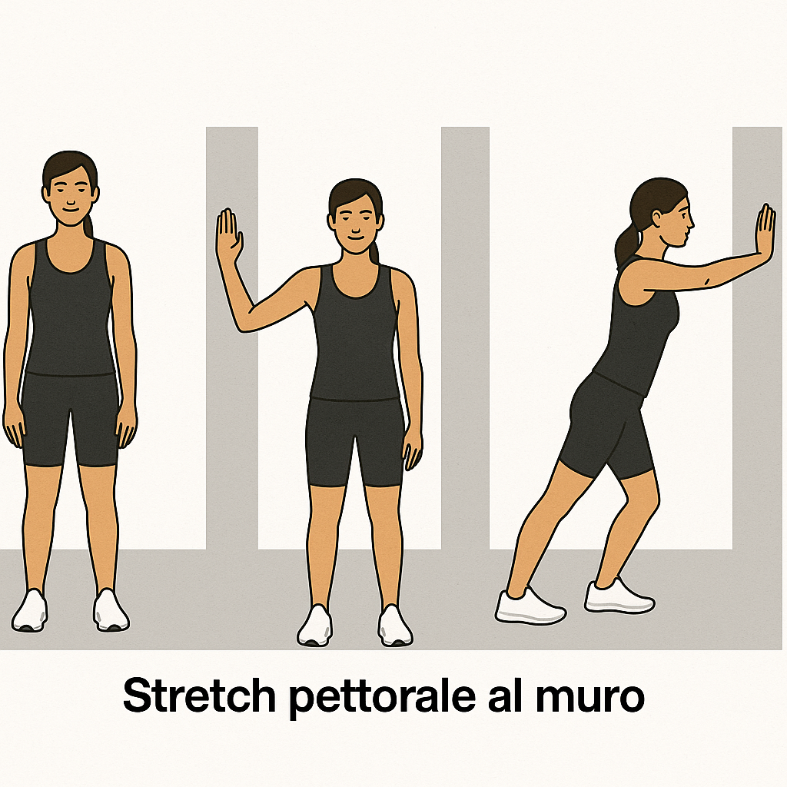

| 0 | Bicicletta riscaldamento | 5 min | - |
| Alla fine di questo circuito: ripeti solo gli esercizi evidenziati (Grandi) per il 2° giro. |
| 1 | Chest Press (macchina) 2° giro: ripeti | 10 | 40 Kg |
| 1 | Lat Machine presa larga 2° giro: ripeti | 10 | 35 Kg |
| 1 | Leg Press (SX/DX) 2° giro: ripeti | 10 SX/DX | 90 Kg |
| 1 | Shoulder Press (macchina) 2° giro: ripeti | 10 | 25 Kg |
| 1 | Vertical Traction 2° giro: ripeti | 10 | 45 kg |
| 1 | Leg Extension (SX/DX) | 15 SX / 10 DX | 25 Kg SX, 30 Kg DX |
| 1 | Leg Curl (SX/DX) | 15 SX / 10 DX | 20 Kg SX, 25 Kg DX |
| 1 | Pulley 2° giro: ripeti | 10 | 25 Kg |
| Alla fine di questo circuito: ripeti solo gli esercizi evidenziati (Grandi) per il 2° giro. |
| 2 | Arnold Press manubri | 10 | 6 Kg |
| 2 | TRX Row | 10 | Corpo libero |
| 2 | Affondi camminati 2° giro: ripeti | 10 SX / 10 DX | Corpo libero |
| 2 | Dip su panchette | 10 | Corpo libero |
| 2 | Curl bicipiti manubri | 10 | 8 Kg |
| 2 | Hip Thrust / Glute Bridge 2° giro: ripeti | 10 | 20 Kg |
| Alla fine di questo circuito: ripeti solo gli esercizi evidenziati (Grandi) per il 2° giro. |
| 3 | Step Up su cubo | 10 SX / 10 DX | Corpo libero |
| 3 | Side Plank | 30 sec per lato | - |
| 3 | Calf Raise | 20 | Corpo libero |
| 3 | Plank | 40 sec | - |
| 3 | Pallof Press | 15 per lato | Elastico |
| Alla fine di questo circuito: ripeti solo gli esercizi evidenziati (Grandi) per il 2° giro. |
| 4 | Cyclette | 30 sec 140–160 bpm alternato X8 | - |
| 4 | Cyclette | 30 sec 110–120 bpm alternato X8 | - |
| Alla fine di questo circuito: ripeti solo gli esercizi evidenziati (Grandi) per il 2° giro. |
| 5 | Allungamento in piedi | 20 sec per gamba |  |
| 5 | Allungamento gambe tese | 20 sec |  |
| 5 | Stretch gluteo a 4 | 20 sec per lato |  |
| 5 | Child's pose | 20 sec | |
| 5 | Allungamento con appoggio | 20 sec |  |
| 5 | Stretch pettorale al muro | 20 sec |  |
| 5 | Stretch laterale | 20 sec per lato |  |
| Alla fine di questo circuito: ripeti solo gli esercizi evidenziati (Grandi) per il 2° giro. |